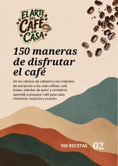
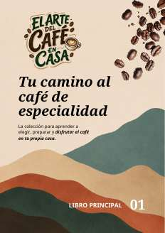
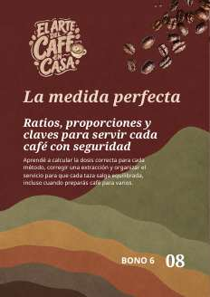
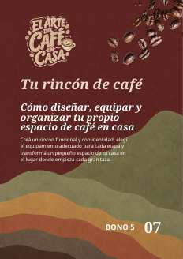

Agrio o aguado
Aprendé qué ajustar en molienda, tiempo y proporción antes de cambiar de cafetera.
EL ARTE DEL CAFÉ EN CASA
Transformá el café de todos los días en una taza con aroma, equilibrio y sabor propios. Aprendé a elegirlo, prepararlo y corregirlo sin depender de una máquina profesional.
Tu pago será procesado por Mercado Pago


ENTENDÉ QUÉ PASA EN TU TAZA
Aprendé a reconocer lo que sentís en la taza y a corregirlo sin cambiar todo, gastar de más ni volver a empezar.
Reemplazar por una página interior real.
Reemplazar por una página interior real.
Aprendé qué ajustar en molienda, tiempo y proporción antes de cambiar de cafetera.
Reconocé una sobreextracción y corregí una sola variable para no empezar de cero.
Usá tablas de ratio para pasar de una taza a una jarra sin medir “a ojo”.
EL PRIMER PEQUEÑO ORGULLO
Elegís el método que ya usás.
Pesás café y agua con una proporción clara.
Probás y corregís una sola variable.
TODO LO QUE RECIBÍS
Empezá por el libro principal y abrí cada guía cuando la necesites. No hace falta leer todo para preparar una taza mejor.

Libro principalTu camino al café de especialidad
Recetario150 maneras de disfrutar el café
GuíaEl viaje del café
GuíaEl arte de combinar
GuíaEl café también se come
GuíaLa alquimia del sabor
GuíaTu rincón de café
GuíaLa medida perfecta
GuíaMás allá del café
TU COLECCIÓN DIGITAL
Empezá con el café y el equipo que ya tenés. La colección incluye el libro principal, 150 preparaciones y 7 guías para seguir explorando.

REVISALO CON TRANQUILIDAD
Entrá, recorré el material y evaluá si te ayuda a preparar mejor. Si no cumple con tus expectativas, podés solicitar la devolución dentro de los 7 días posteriores a la compra.
PREGUNTAS FRECUENTES
No. Podés aplicar el contenido con prensa francesa, Moka, V60, Aeropress, cápsulas y otros métodos domésticos.
Sí. El recorrido parte de tu café y equipo actuales. La idea es cambiar una variable por vez y entender el resultado.
El acceso es digital y se habilita después de confirmar el pago. Podés consultarlo desde el celular, la computadora o la tablet.
El acceso no vence. Podés volver a las recetas, tablas y guías cada vez que lo necesites.
Tenés 7 días desde la compra para revisar la colección. Si no es para vos, podés solicitar la devolución.
TU NUEVO RITUAL PUEDE EMPEZAR HOY
Más aroma. Más confianza. Más orgullo por una taza preparada por vos.
QUIERO EMPEZARARS 22.400 · Acceso digital inmediato